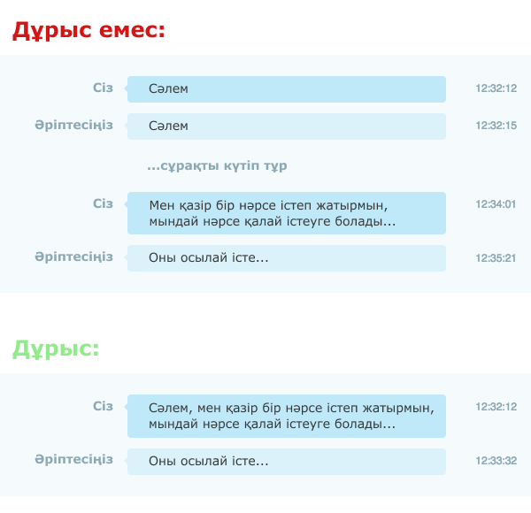

Мета сұрақтарды қоймаңыз!
Мета сұрақ — жаңа сұрақтарды ойға келтіретін сұрақ, мысалы:
— "Жарайды, бірақ бұл сұрақтардың еш зияны жоқ қой, неге оларды қоюға болмайды?"
— Мұндай сұрақтар көп уақыт зая жібереді! Сіздің және сізге көмектесуге тырысатын басқа адамдардың! Сіз мәселеге тікелей бармай, жекелей кездескендей сыпайы болуға тырысасыз. Бірақ чат – ол бөтен нәрсе. Адамдар сөйлегеннен әлдеқайда баяу тереді. Әдепті болудың орнына, сіз басқа адамды сұрақты құрастырған кезде күте аласыз, бұл өнімділікті жоғалтуға әкеледі.
Бұл келесі хабарларға да қатысты: "Сәлеметсіз бе", "Сәлем. Осындасың ба?", "Бір минут бар ма?", "Пинг". Сұрағыңызды қоя салыңызшы!
Оның үстіне, сұрақ қойғанда бейсинхрондық әрекеттестік басталады. Әңгімелесуші қолжетімді болса және ол қайтып келгенше кетіп қалсаңыз, ол сіздің «Сәлем» деген сөзге қарап, не болды деп ойламай, сұраққа жауап береді.
Бiр суретпен айтқанда:
